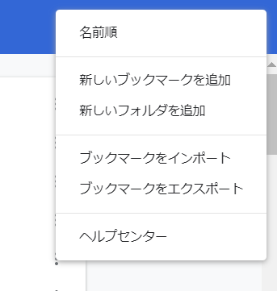

Chapter: 6 bookmark編集
google accountのブックマークを整理するために使えるかもという感じの理由で書きました。
bookmarkの名前, url, 追加日付の3つをデータフレーム化できます。
chromeでctrl + shift + o を押して、bookmark編集画面を開く

こんな感じの画面が出る。
右上のてんてんてんを押す

ブックマークをエクスポートする。
任意の場所に保存する。
参考https://cfes-project.eco.u-toyama.ac.jp/wp-content/uploads/2017/04/3_scraping.html
# エクスポートしたbookmark htmlを読み込む
html <- read_html(here("data/bookmarks_2020_06_04.html"))
# url
all_url <- html %>%
html_nodes("a") %>% # find all links
html_attr("href") %>% # pull out url
as_tibble() %>%
rename(url = 1)
# bookmarkに登録してる名前
all_text <- html %>%
html_nodes("a") %>%
html_text() %>% # pull out text
as_tibble() %>%
rename(text = 1)
# 追加した日
all_add_date <- html %>%
html_nodes("a") %>%
html_attr("add_date") %>% # pull out date
as_tibble() %>%
rename(add_date = 1)
# 3つをくっつけてデータフレーム化
d <- bind_cols(all_url, all_text, all_add_date)
d %>% glimpse()## Rows: 308
## Columns: 3
## $ url <chr> "http://m.yahoo.co.jp/", "https://www.youtube.com/?gl=JP&hl=ja", ...
## $ text <chr> "", "", "", "", "", "", "", "", "", "", "", "", "GitHub", "Dynali...
## $ add_date <chr> "1437146203", "1443941039", "1437378244", "1551415924", "15323205...追加した日付がunixタイムになってるから、日付に直す
d2 <- d %>%
mutate(add_date = as.numeric(add_date),
add_date = as.POSIXct(add_date, origin="1970-1-1")) %>%
# 追加時間はいらなくてymdだけで良い場合は下記も実行
mutate(add_date = format(add_date, format="%Y/%m/%d")) %>%
mutate(add_date = as_date(add_date))
d2 %>% glimpse()## Rows: 308
## Columns: 3
## $ url <chr> "http://m.yahoo.co.jp/", "https://www.youtube.com/?gl=JP&hl=ja", ...
## $ text <chr> "", "", "", "", "", "", "", "", "", "", "", "", "GitHub", "Dynali...
## $ add_date <date> 2015-07-18, 2015-10-04, 2015-07-20, 2019-03-01, 2018-07-23, 2019...データフレーム化できたので、あとは適当に編集してやればmarkdownの埋め込みlinkも作れるし、scrapboxの埋め込みlinkにもできる。
ついでに簡単に集計して可視化してみる